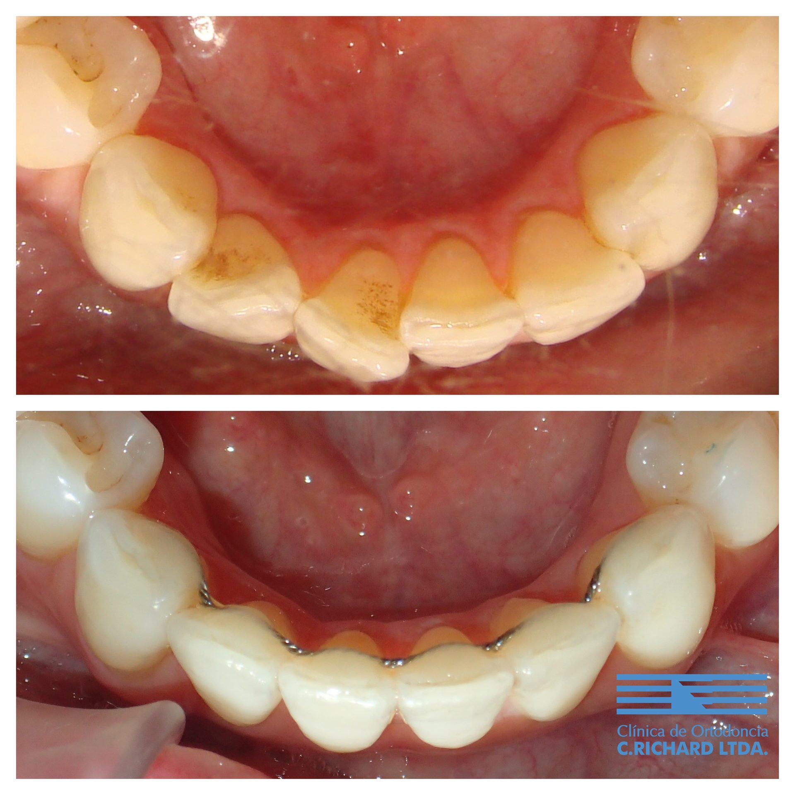

Ortodoncia invisible con alineadores (Invisalign) en Las Condes
Revisado por Dr. Alberto Del Real V., ortodoncista · Registro Superintendencia de Salud N° 312378 · Actualizado en octubre de 2026
Los alineadores son placas transparentes y removibles que mueven los dientes por etapas, como alternativa a los brackets. Sirven para la mayoría de los casos de adultos y adolescentes —desde un apiñamiento leve hasta casos complejos—, siempre que el tratamiento lo planifique y controle un ortodoncista especialista y que el paciente los use entre 20 y 22 horas al día. En Ortodoncia Richard los planifican ortodoncistas especialistas, con escáner intraoral y planificación digital.

Cómo funciona el tratamiento
Primero se hace una evaluación completa: examen clínico, radiografías y registros digitales de la boca con escáner intraoral, sin pastas de impresión. Con esos registros el ortodoncista planifica en el computador cada movimiento de los dientes y se fabrica una serie de alineadores, que el paciente va cambiando cada una o dos semanas.
Los controles en la clínica son menos frecuentes que con brackets, pero igual de importantes: en ellos el especialista verifica que los dientes se muevan según lo planificado y, si hace falta, corrige el plan.
¿Para quién sirven?
Para adultos y adolescentes con dientes permanentes. Son especialmente cómodos para quien necesita un tratamiento discreto por su trabajo o vida social. Hay casos —ciertos problemas de mordida o de los maxilares— en que los brackets o un tratamiento combinado logran mejor resultado; eso se define en la primera consulta, con el caso a la vista y no por catálogo.
Alineadores o brackets
- Alineadores: casi invisibles, se sacan para comer y cepillarse, sin alambres que rocen. Exigen disciplina: si no se usan, no funcionan.
- Brackets (frenillos): fijos, no dependen de que el paciente se acuerde de usarlos; pueden ser metálicos o estéticos. También existe la ortodoncia lingual, con los brackets por dentro.
Por qué con un especialista y no por correo
Existen empresas que envían alineadores a domicilio sin examen presencial. Sin radiografías ni controles no se pueden detectar problemas de encías, raíces o mordida, y un movimiento mal planificado puede dañarlos. La AAO recomienda que todo tratamiento de ortodoncia sea supervisado presencialmente por un ortodoncista.
Lo que investigamos
Nuestro equipo investiga los materiales de alineadores impresos directamente en 3D, una tecnología que puede cambiar cómo se fabrican:
- Mechanical properties of thermoformed and direct-printed aligner materials after immersion in 37 °C water: a 14-day in vitro study
Compara materiales de alineadores impresos directamente en 3D con los termoformados tradicionales.
Quién te atiende
Ortodoncistas especialistas, miembros de la AAO, la WFO y la Sociedad de Ortodoncia de Chile:


Preguntas frecuentes
¿Cuánto dura un tratamiento con alineadores?
Depende del caso. Correcciones leves pueden tomar algunos meses; un caso completo suele tomar entre uno y dos años. El plazo estimado para cada paciente se entrega en la evaluación.
¿Los alineadores duelen?
Al cambiar a un alineador nuevo es normal sentir presión o molestia por uno o dos días. Suele ser más llevadero que los brackets porque no hay alambres ni piezas que rocen.
¿Puedo comer con los alineadores puestos?
No. Se sacan para comer y para tomar cualquier cosa que no sea agua, y se vuelven a poner después de cepillarse los dientes.
¿Necesito contención al terminar?
Sí, igual que con brackets. Al terminar se usa una contención fija o removible para que los dientes no vuelvan a moverse.
¿Sirven los alineadores para adolescentes?
Sí, cuando ya tienen los dientes permanentes y se comprometen a usarlos. Los padres suelen apoyar el uso diario.
¿Cuánto cuesta la ortodoncia con alineadores?
Depende del caso: de qué hay que corregir, de cuántos alineadores se necesitan y de la duración estimada. Por eso no publicamos precios; el valor, las alternativas (alineadores, brackets metálicos o estéticos, ortodoncia lingual) y las formas de pago se informan en la primera consulta, después del examen.